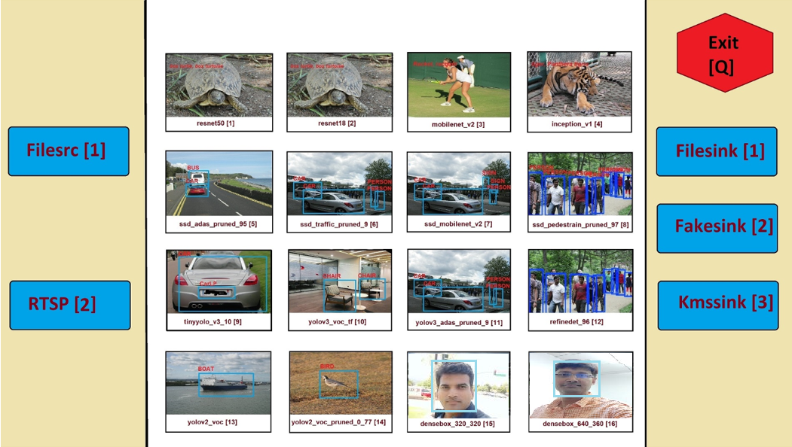

Smart Model Select¶
Smart Model Select is an example application to demonstrate inferencing using 16 Machine Learning (ML) models supported by VVAS. User can select the input source, ML model to be used and the output option, like display on monitor or dump the results to file.
Smart Model Select application design is built on zcu104 development board which, along with VVAS, provides a complete framework for building and customizing video platforms with different pipelines stages. zcu104 development board can support below mentioned pipeline stages:
Capture Pipelines
Video Processing Pipelines
Acceleration Pipelines
Output Pipelines
Smart Model Select design doesn’t support Capture Pipeline.
Features¶
Smart Model Select application supports below mentioned features
Supports 16 ML Models
resnet50
resnet18
mobilenet_v2
inception_v1
ssd_adas_pruned_0_95
ssd_traffic_pruned_0_9
ssd_mobilenet_v2
ssd_pedestrian_pruned_0_97
tiny_yolov3_vmss
yolov3_voc_tf
yolov3_adas_pruned_0_9
refinedet_pruned_0_96
yolov2_voc
yolov2_voc_pruned_0_77
densebox_320_320
densebox_640_360
Display Port for display
H264/H265 Decode
Input can be from file, rtsp source
Prerequisites¶
Before attempting the execution of application, please ensure that all the pre-requisites mentioned below are fulfilled.
Hardware Requirements¶
Micro USB cable, connected to laptop or desktop computer for the terminal emulator
Micro SD card, 8 GB or larger, class 10 (recommended)
Display port 1.2 supported Monitor with 1920x1080 as max resolution
Display port 1.2 cable
Software/Tools Requirements¶
Serial terminal emulator (for example, Tera Term)
Balena etcher or equivalent flashing tool to flash the SD Card image
System Requirements¶
Board must have access to the internet and be accessible from your development system
Application Design¶
Smart Model Select application design has a platform and integrated accelerator functions.
Platform is nothing but collection of hardware as well as software components required to build a solution.
Prebuilt design for Smart Model Select has been provided as part of this VVAS release.
You may download this ready to use design by following the link Download pre-built binaries and
directly jump to Preparing Setup section describing how to prepare the setup and execute the example application.
If for some reason, one wants to build the design from scratch, then refer to the section Build Design that describes the steps to build the platform, accelerator functions and finally integrate these to create complete Design for Smart Camera Select application.
Note
VVAS platform zcu104_vcuDec_DP may not be performance optimal. This platform is made available as reference along with Smart Model Select Application.
Note
VVAS platform zcu104_vcuDec_DP adds patch to irps5401 driver for zcu104 board to support multi thread execution of VAI models.
This patch shouldn’t be applied to other boards
and is not part of the official Xilinx released 2021.1 Petalinux.
Pre-built binaries¶
Ready to use Prebuilt binaries are provided with this VVAS release. You can download these binaries and required supporting files and quickly run the example application.
Create a folder, say PREBUILT_BINARIES, where pre-built binaries are to be downloaded.
Click on Smart Model Select Prebuilt Binaries. This will ask for few credentials and then start downloading.
Unzip the downloaded package vvas_smart_model_select_2021.1_zcu104.zip.
unzip vvas_smart_model_select_2021.1_zcu104.zip
Prebuilt binaries package includes
sd_card.img: Image to be flashed on the SD Card on the zcu104 board.sdk.sh: This is required to generate sysroot. Sysroot is required only if one wants to build the VVAS plugins and libraries. You do not need this if you simply want to execute the pre-built application.models: Supported DPU models on this platform.app: Contains application executable and input configuration/json files.arch.json: Represents DPU architecture.
Once you have downloaded the prebuilt binaries, you need to prepare the setup to execute the application, as shown in the next section.
Preparing the setup¶
It is assumed that all the pre-requisites are fulfilled and we are ready to setup the board and execute the example application. There are few steps that are required only for the first time when the zcu104 board is not flashed with the sd_card image for smart_model_select application. You may skip these steps if zcu104 board has already been flashed with the required sd_card image.
One time setup¶
Flash the SD Card with the
sd_card.imgusing any SD card flashing tool like dd, Win32DiskImager, or BalenaEtcher.If using pre-built binaries, then sd_card.img is located as
<PREBUILT_BINARIES>/vvas_smart_model_select_2021.1_zcu104/sd_card.img
If you have built the platform yourself, then sd_card.img would be located at
<VVAS_SOURCES>/VVAS/ivas-examples/Embedded/smart_model_select/binary_container_1/sd_card.img
Insert this SD card in the SD card slot on the zcu104 board and boot the board.
After booting up the board, run below command to extend the root filesystem partition to its 100% size. This is useful in copying input video streams and storing output files from example application.
resize-part /dev/mmcblk0p2
Copy the <PREBUILT_BINARIES>/vvas_smart_model_select_2021.1_zcu104/app folder of the application onto home folder of the board. .. code-block:
scp -r <PREBUILT_BINARIES>/vvas_smart_model_select_2021.1_zcu104/app root@<board ip>:~/
After copying,
chmod~/app/setup.sh and ~/app/smart_model_select to make them executable on the board. .. code-block:chmod 777 ~/app/smart_model_select chmod 777 ~/app/setup.sh
Create /usr/share/vitis_ai_library/models folder on the board and copy the Vitis-AI models into it:
mkdir -p /usr/share/vitis_ai_library/models scp -r <PREBUILT_BINARIES>/vvas_smart_model_select_2021.1_zcu104/models/* root@<board ip>/usr/share/vitis_ai_library/models/
Running the application¶
This section will elaborate on the usage of the application and various options with it.
Every time the board is booted, execute the steps mentioned below
Run setup.sh on the board, this will set the alpha channel of the display port and copy label json files related to each model.
cd /home/root/app/ ./setup.sh
Export the environment variable “XCLBIN_PATH” with path pointing to xclbin. If it’s not exported, /media/sd-mmcblk0p1/dpu.xclbin will be the default xclbin path.
Run the command to execute the application .. code-block:
./smart_model_select
When the application starts executing, you can observe the Fig 1 coming up in the display. This menu displays various models supported by the application and options on either side of the image are for input sources and output sinks supported. All these options carry an index number alongside, which user need to enter in sequence to create the pipeline of choice.
Fig 1: Menu image of the application
Below command line prompt will appear on console/command prompt when the application starts, which will accept the input options for creating the GStreamer pipeline of choice. As described below, user must enter four options in the sequence of input source, ML model to be used, output sink and a field to enable/disable performance mode. Example the sequence “1,2,3,0”, tells that the source is “filesrc”, ML model to be used is “resnet18”, sink is “kmssink” and 0 is to disable performance mode.
XXXXXXXXXXXXXXXXXXXXXXXXXXXXXXXXXXXXXXXXXXXXXXXXXXXXXXXXXXXXXXX
Menu displayed on the monitor shows various options available
for input source, ML model, output sink. Each option carries an
index number alongside.
Select elements to be used in the pipeline in the sequence of
"input source, ML model, output sink and performance
mode flag" separated by commas.
e.g. input: 1,1,3,0
Above input will run "filesrc" input, "resnet50" model
"kmssink" used as output sink and performance mode disabled.
Enter 'q' to exit
XXXXXXXXXXXXXXXXXXXXXXXXXXXXXXXXXXXXXXXXXXXXXXXXXXXXXXXXXXXXX
Note
If performance mode is enabled, then the sink type should always be fakesink. Otherwise pipeline will not execute.
If performance mode is enabled, there will be 4 ML pipelines executed simultaneously feeding DPU from multiple threads. This results in improved performance compared to when using DPU from single thread.
Followed by the selection of ML model, source and sink elements, next step is the option to provide input filename or RTSP URL as applicable, to be processed.
If the selected input is file source, then by default application will look for the input video files under app/videos folder.
Create the folder /home/root/app/videos and copy the video files here with names given below.
videos/
+-- CLASSIFICATION.mp4
+-- FACEDETECT.mp4
+-- REFINEDET.mp4
+-- SSD.mp4
+-- YOLOV2.mp4
+-- YOLOV3.mp4
If the file is not available in this folder then application will prompt for the input file. All files must be named after ML model type as given below. User has to enter the input file location in response to the below message prompt.
Enter the input filename to be processed
If the selected input source is “RTSP”, then application will prompt for entering “RTSP” URL.
Enter the RTSP url to be processed
The application supports RTSP input with RTP packets containing H264 payload of resolution 1920x1080. One can download and setup GStreamer RTSP server or VLC can also be used to serve RTSP data. Follow below steps to compile GStreamer RTSP server. For successful compilation of GStreamer RTSP server, GStreamer framework must be installed as a prerequisite.
1. wget https://gstreamer.freedesktop.org/src/gst-rtsp-server/gst-rtsp-server-1.16.2.tar.xz
2. tar -xvf gst-rtsp-server-1.16.2.tar.xz
3. cd gst-rtsp-server-1.16.2/
4. ./autogen.sh --disable-gtk-doc
5. make
Examples in gst-rtsp-server-1.16.2/examples can be used to serve RTSP data. Refer below example
cd gst-rtsp-server-1.16.2/examples
./test-launch "filesrc location=<File with H264 1080p in MP4 format> ! qtdemux ! h264parse ! rtph264pay name=pay0 pt=96"
Streaming starts on the URL rtsp://<RTSP server ip adress>:8554/test. Enter the same URL as input to the application.
Application supports multiple sink options as well. If kmssink is used, output video will be rendered on the display monitor connected. If filesink is chosen, the output will get dumped to a file by name “output.nv12” in the current directory. On the other hand, fakesink acts a black hole for the data with no overhead.
Below Fig 2 is the pictorial depiction of a typical pipeline that is created by the application.

Fig 2: Typical GStreamer pipeline that application creates
Build Design¶
The Design consists of a base platform and integrated accelerator functions (Kernels).
Base Platform¶
Smart Model Select application requires video decoding, resizing the decoded frames, Machine Learning and finally display the output. Hence, we need a platform that fulfills these requirement. This VVAS release has zcu104_vcuDec_DP base platform that meets the requirements of decode and display. This platform has hardware accelerated video decoding IP, Video Codec Unit VCU. For display, this platform supports Display Port. The design also include two DPU 4096 cores for Machine Learning.
In addition to the above-mentioned hardware components, zcu104_vcuDec_DP supports following software components
omxh264dec GStreamer plugin
Opensource framework like GStreamer, OpenCV
Vitis AI 1.4 libraries
Xilinx Run Time (XRT)
Compiling base platform¶
Complete sources along with workspace to build the platform is provided as part of this release. Follow the steps mentioned below to compile the platform.
Navigate to the folder, such as
VVAS_SOURCES, where you want to clone the VVAS source tree.Clone VVAS repo:
git clone https://github.com/Xilinx/VVAS.git
Setup tool chain environment:
source <2021.1_Vitis>/settings64.sh source <2021.1_Petalinux>/settings.sh source <2021.1_XRT>/setenv.sh
Navigate to
zcu104_vcuDec_DPplatform folder:cd <VVAS_SOURCES>/VVAS/ivas-platforms/Embedded/zcu104_vcuDec_DP
Compile the platform:
make
After build is finished, platform will be available <VVAS_SOURCES>/VVAS/ivas-platforms/Embedded/zcu104_vcuDec_DP/platform_repo/xilinx_zcu104_vcuDec_DP_202110_1/export/xilinx_zcu104_vcuDec_DP_202110_1/ location.
Hardware Accelerators (Kernels)¶
Smart Model Select application’s requirements of Machine Learning and Resize operations are fulfilled by below mentioned accelerators (Kernels):
DPU(Deep Learning Processing Unit) for Machine Learning.Multiscalerfor Preprocessing operation
Compiling Hardware Accelerators (Kernels)¶
The sources for hardware accelerators required for Smart Model Select application can be made available as mentioned below:
Navigate to <VVAS_SOURCES>
DPU Kernel sources can be cloned from:
git clone https://github.com/Xilinx/Vitis-AI.git cd Vitis-AI/ git checkout tags/v1.4 -b v1.4
Multiscaler kernel sources are part of VVAS source tree and are located at:
<VVAS_SOURCES>/VVAS/ivas-accel-hw/multiscaler
Kernels may have different configurations for different application requirements. Hence it is recommended to build the Kernels from the application design workspace with the required Kernel configuration for that application.
Each application design workspace provided with this VVAS release has the required Kernel configurations for that application.
In case one wants to change the kernel configuration for some reason, do these changes in the configuration files mentioned below.
Compilation of Kernels is initiated from the build process of the final design for the application. Hence kernel compilation steps are not covered separately here.
Configuration of DPU:
<VVAS_SOURCES>/VVAS/ivas-examples/Embedded/smart_model_select/dpu_conf.vh
Configuration of Multiscaler:
<VVAS_SOURCES>/VVAS/ivas-examples/Embedded/smart_model_select/v_multi_scaler_config.h
You may modify the kernel configuration as per your requirements in these files.
Creating SD Card image¶
Once platform is available and kernels are built, next step is to stitch the required hardware accelerators (kernels) into the platform and generate final SD Card image using Vitis Flow.
VVAS sources already has ready to build example Vitis workspace for smart_model_select Application. This workspace uses Vitis Flow that stitches kernels into the platform and generates final SD card image. Follow below mentioned steps to build the final image.
cd <VVAS_SOURCES>/VVAS/ivas-examples/Embedded/smart_model_select
make PLATFORM=<PLATFORM_PATH > DPU_TRD_PATH=<DPU_PATH> HW_ACCEL_PATH=<MULTISCALER_PATH>
PLATFORM_PATH = <VVAS_SOURCES>/VVAS/ivas-platforms/Embedded/zcu104_vcuDec_DP/platform_repo/xilinx_zcu104_vcuDec_DP_202110_1/export/xilinx_zcu104_vcuDec_DP_202110_1/xilinx_zcu104_vcuDec_DP_202110_1.xpfm
DPU_PATH = <VVAS_SOURCES>/Vitis-AI/dsa/DPU-TRD/
MULTISCALER_PATH = <VVAS_SOURCES>/VVAS/ivas-accel-hw
Once above build is done, final sdcard image is available at ./binary_container_1/sd_card.img location.
Build VVAS Plug-ins and Libraries¶
VVAS Plugins and libraries are part of petalinux bsp and are built along with building platform. So, no need to build again. Still if one wants to build these for some reason, follow the steps mentioned below,
Setting Sysroot¶
Sysroot is required to build the VVAS GStreamer plugins. Sysroot installer location depends on whether you are using pre-built binaries, or you have built the platform from scratch.
If you have downloaded the pre-built binaries in folder, say PREBUILT_BINARIES, then you can find the Sysroot installer at:
<PREBUILT_BINARIES>/vvas_smart_model_select_2021.1_zcu104/sdk.sh
If you have built the platform yourself, then Sysroot installer is available at:
<VVAS_SOURCES>/VVAS/ivas-platforms/Embedded/zcu104_vcuDec_DP/platform_repo/tmp/sw_components/sdk.sh
One need to install the sysroot. Create a folder, say sysroot in VVAS_SOURCES. Command for sysroot generation is:
<path to sdk.sh>/sdk.sh -y -d VVAS_SOURCES/sysroot/
Now sysroot is installed. You are ready to build plugins and applications.
Build Plugins and Libraries¶
Get the VVAS Sources if not done already. Follow the steps mentioned below.
Navigate to the folder, say
VVAS_SOURCES, where you want to clone the VVAS source tree.Clone VVAS repo:
git clone https://github.com/Xilinx/VVAS.git
VVAS Source tree structure is described below:

ivas-utils: This folder contains the source code for the VVAS kernel interface to be exposed by the acceleration software libraries, abstraction APIs on top of the Xilinx Runtime (XRT) tool, and common headers (for example, metadata).
ivas-gst-plugins: This folder contains all the VVAS GSteamer plug-ins, including the infrastructure plug-ins and the Custom plug-ins.
ivas-accel-sw-libs: Contains source for the acceleration software libraries that are called from the GStreamer infrastructure plug-ins.
ivas-accel-hw: This folder contains the hardware kernel source code.
ivas-examples: This repository hosts example solutions.
ivas-platforms: This folder contains the reference platforms for different applications.
Navigate to
VVAS_SOURCES/VVASfolderUnset the LD library path environment variable:
unset LD_LIBRARY_PATH
Set the sysroot path:
source VVAS_SOURCES/sysroot/environment-setup-cortexa72-cortexa53-xilinx-linux
You must have write permission to the sysroot.
Build VVAS plugins and libraries:
./build-ivas-essential.sh Edge
When above step is complete, VVAS plugins are generated as
install/ivas_installer.tar.gz.Copy
install/ivas_installer.tar.gzonto the root folder (/) of the target board and untar it. VVAS Plugins are now installed on the target device.
Build Smart Model Select Application¶
The example application (smart_model_select) is available in the “ivas-example” section of VVAS repository. Follow below steps to compile the application:
cd <VVAS_SOURCES>/VVAS/ivas-examples/Embedded/smart_model_select/src
unset LD_LIBRARY_PATH
source <sysroot path>/environment-setup-cortexa72-cortexa53-xilinx-linux
make SYSROOT= <sysroot path>/sysroots/cortexa72-cortexa53-xilinx-linux